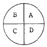

건설재료시험기능사 (2004-10-10 기출문제)
1과목: 건설재료
1. 어떤 목재 700cm3를 건조 전의 무게를 측정하였더니 558.9g 이었고 절대 건조상태에서 측정하였더니 500g이었다. 이 목재의 함수율은?
- 11.8%
- 13.5%
- 71.4%
- 81.1%
(정답률: 68%)

2. 석재의 성질에 대한 설명으로 잘못된 것은?
- 석재의 비중은 2.65 정도이며 비중이 클수록 석재의 흡수율이 작고, 압축강도가 크다.
- 석재의 흡수율은 풍화, 파괴, 내구성등과 관계가 있고 흡수율이 큰 것은 빈틈이 많으므로 동해를 받기 쉽다.
- 석재의 강도는 인장강도가 특히 크고 압축강도는 매우 작으므로 석재를 구조용으로 사용하는 경우에는 주로 인장력을 받는 부분에 많이 사용된다.
- 석재의 공극률은 일반적으로 석재에 포함된 전체공극과 겉보기체적의 비로서 나타낸다.
(정답률: 79%)
3. 스트레이트 아스팔트에 비해 고무화 아스팔트 이점을 설명한 것중 옳지 않은 것은?
- 내후성 및 마찰계수가 크다.
- 탄성 및 충격저항이 크다.
- 응집력과 부착력이 크다.
- 감온성이 크다.
(정답률: 57%)
4. 콘크리트용 골재의 함수량에 대한 사항 중 옳은 것은?
- 비중이 큰 골재는 흡수량도 크다.
- 굵은 골재는 잔골재 보다 흡수량이 크다.
- 콘크리트의 배합을 나타낼 때는 골재가 표면건조포화 상태에 있는 것을 기준으로 한다.
- 표면 수량은 흡수량에서 함수량을 뺀 값이다.
(정답률: 63%)
5. 시멘트 분말도에 관한 설명으로 옳지 않은 것은?
- 분말도는 시멘트 입자의 고운 정도를 나타낸다.
- 분말도가 높은 시멘트는 수화작용이 느리고 조기강도가 크다.
- 분말도가 높으면 풍화되기 쉽고 수화작용에 의한 발열이 크다.
- 분말도 시험법에는 블레인(Blaine)법과 표준체에 의한 방법 등이 있다.
(정답률: 61%)
6. 콘크리트 배합에 있어서 단위수량 160kg/m3 단위 시멘트량 315kg/m3, 공기량 2%로 할 때 단위 골재량의 절대부피는? (단, 시멘트의 비중은 3.15)
- 0.72m3
- 0.74m3
- 0.76m3
- 0.78m3
(정답률: 36%)
7. 다음 중 콘크리트의 워커빌리티 증진에 도움이 되지 않는 것은?
- AE제
- 감수제
- 포졸라나
- 응결경화 촉진제
(정답률: 74%)
8. 시멘트 제조시에 석고를 첨가하는 목적은?
- 알칼리 골재 반응을 막기위해
- 수화작용을 조절하기 위해
- 시멘트의 응결시간을 조절하기 위해
- 수축성과 발열성을 조절하기 위해
(정답률: 79%)
9. 비교적 연한 스트레이트 아스팔트에 적당한 휘발성 용제를 가하여 일시적으로 점도를 저하시켜 유동성을 좋게 한것은?
- 고무 아스팔트
- 컷백 아스팔트
- 역청 줄눈재
- 에멀션화 아스팔트
(정답률: 77%)
10. 재료의 역학적 성질중 재료를 두들길때 얇게 펴지는 성질을 무엇이라 하는가?
- 강성
- 전성
- 인성
- 연성
(정답률: 78%)
11. 다음중 열가소성 수지는?
- 페놀수지
- 요소수지
- 염화비닐수지
- 멜라민수지
(정답률: 67%)
12. 골재의 체가름 시험으로 부터 알수 없는 것은?
- 입도
- 조립률
- 굵은골재의 최대치수
- 실적률
(정답률: 78%)
13. AE 콘크리트의 알맞은 공기량은 굵은 골재의 최대 치수에 따라 정해지는데 일반적으로 콘크리트 부피의 얼마 정도가 가장 적당한가?
- 1∼2%
- 2∼3%
- 4∼7%
- 8∼10%
(정답률: 71%)
14. 혼화재료를 저장할 때의 주의사항 중 옳지 않은 것은?
- 혼화재는 항상 습기가 많은 곳에 보관한다.
- 혼화재는 날리지 않도록 주의해서 다룬다.
- 액상의 혼화제는 분리하거나 변질하지 않도록 한다.
- 장기간 저장한 혼화재는 사용하기에 앞서 시험하여 품질을 확인한다.
(정답률: 86%)
15. 다음 중 천연 아스팔트가 아닌 것은?
- 레이크 아스팔트
- 록 아스팔트
- 스트레이트 아스팔트
- 아스팔타이트
(정답률: 72%)
16. 다음 중 Stokes의 법칙에 의하여 흙입자의 크기를 알아내는 것은?
- 체분석법
- 침강분석법
- MIT분석법
- Casagrande분석법
(정답률: 52%)
17. 다음 중 시멘트의 분말도를 구하는 시험방법은?
- 블레인 시험
- 비이커 시험
- 오오토 클레이브 시험
- 길모아 시험
(정답률: 52%)
18. 잔골재의 밀도 및 흡수율 시험 방법으로 틀린 것은?
- 500g 시료를 플라스크에 넣고 물을 용량의 90% 까지 채운다음 교란시켜 기포를 모두 없앤다.
- 플라스크를 항온수조에 담가 규정의 온도로 조정후 플라스크, 시료, 물의 질량을 측정한다.
- 잔골재를 플라스크에서 꺼낸다음 항량이 될 때까지 1⑤± 5℃에서 건조시키고 실온까지 식힌후 무게를 단다.
- 흡수율 시험은 3회 이상으로 하며, 측정값은 그 차가 0.5% 이하여야 한다.
(정답률: 48%)
19. 콘크리트 슬럼프시험에서 시료를 슬럼프콘에 채워 넣을 때 약 1/3씩 되도록 3회에 나누어 채우는데 1/3 이란 다음 어떤 것에 해당되는가?
- 콘 높이의 1/3씩을 말한다.
- 약 10cm 씩을 말한다.
- 슬럼프콘 용적의 1/3씩을 말한다.
- 처음 1/3은 바닥에서 5cm, 다음 1/3은 바닥에서 17cm 위치를 말한다.
(정답률: 49%)
20. 다음 중 워커 빌리티측정 방법이 아닌 것은?
- 슬럼프테스트
- 비파괴시험
- 켈리보올관입시험
- 플로우테스트
(정답률: 55%)
2과목: 건설재료시험
21. 아스팔트 신도시험에 대한 설명으로 틀린 것은?
- 신도는 3회의 시험결과의 평균값을 취한다.
- 신도는 아스팔트의 늘어나는 능력을 말하며 연성의 기준이 된다.
- 클립(clip)의 구멍을 시험기의 핀 또는 훅(hook)에 걸고 당겨서 시료가 끊어졌을 때의 거리를 mm로 기록한다.
- 별도 규정이 없는 한 온도는 25± 0.5℃, 속도는 5±0.25cm/min로 시험을 한다.
(정답률: 44%)
22. 아스팔트의 침입도 시험에서 표준 침이 관입하는 깊이가 20mm일때 침입도의 표시로 옳은 것은?
- 2
- 20
- 200
- 2000
(정답률: 48%)
23. 콘크리트의 슬럼프 시험용 몰드의 크기는? (단, 밑면 안지름× 윗면 안지름× 높이)
- 10× 20× 30cm
- 10× 30× 20cm
- 20× 10× 30cm
- 30× 10× 20cm
(정답률: 80%)
24. 콘크리트의 압축강도 시험용 공시체를 성형한 후 몇 시간 지난후 모울드를 떼내야 하는가?
- 2∼4시간
- 6∼12시간
- 12∼20시간
- 24∼48시간
(정답률: 66%)
25. 입도(粒度) 시험용 잔골재시료는 그림과 같은 4분법을 반복해서 필요량의 시료를 취한다. 다음의 시료 취하는 방식중 어느것이 옳은가?

- A+B
- B+C
- C+D
- D+B
(정답률: 70%)
26. 콘크리트의 압축강도 시험에서 공시체는 다음의 어느상태에서 시험하는가?
- 절건상태
- 함수율 5% 일때
- 기건상태
- 습윤상태
(정답률: 45%)
27. 다음 중 역청재료가 혼합되었을 때 그 사용목적에 적당한 굳기를 가지는지를 알기 위한 시험은?
- 침입도 시험
- 신도 시험
- 점도 시험
- 증발감량시험
(정답률: 80%)
28. 수축한계 시험에서 수은을 사용하는 이유는 무엇을 구하기 위한 것인가?
- 젖은 흙의 무게
- 젖은 흙의 부피
- 건조기에서 건조시킨 흙의 무게
- 건조기에서 건조시킨 흙의 부피
(정답률: 57%)
29. 두꺼운 불투명 유리판위에 시료를 손바닥으로 굴리면서 늘렸을 때 지름 3mm에서 부스러질 때의 함수비를 무엇이라 하는가?
- 수축한계
- 액성한계
- 유동한계
- 소성한계
(정답률: 75%)
30. 흙의 비중시험 에서 비중병에 시료와 증류수를 넣고 10분이상 끓이는 이유로 가장 타당한 것은?
- 흙입자의 무게를 정확히 알기 위하여
- 흙입자속에 있는 기포를 완전히 제거하기 위하여
- 비중병의 무게를 정확히 알기 위하여
- 비중병을 검정하기 위하여
(정답률: 85%)
31. 흙의 함수비 시험에서 시료의 최대 입자 지름이 19mm일때 시료의 최소 무게로 적당한 것은?
- 100gf
- 300gf
- 500gf
- 1000gf
(정답률: 44%)
32. 흙의 함수비 시험에서 시료를 항온건조기에서 항량이 될때까지 건조시켜야 하는데 이때의 온도는?
- 110± 5℃
- 100± 3℃
- 80± 5℃
- 60± 3℃
(정답률: 88%)
33. 시멘트 모르타르의 압축강도 시험의 모르타르 제조에서 시멘트와 표준모래의 무게비로서 적당한 것은?
- 1:1.45
- 1:2.45
- 1:1.65
- 1:2.65
(정답률: 60%)
34. 콘크리트의 배합설계는 골재의 어떤 함수상태를 기준으로 하는가?
- 절대 건조상태
- 공기중 건조상태
- 표면건조 포화상태
- 습윤상태
(정답률: 71%)
35. 콘크리트 인장강도를 측정하기 위한 간접시험 방법으로 가장 적당한 시험은?
- 탄성종파시험
- 직접전단시험
- 비파괴시험
- 할렬시험
(정답률: 67%)
36. 굵은 골재의 최대치수는 무게비로서 몇％ 이상을 통과 하는 체들 가운데에서 가장 작은 치수의 체눈을 체의 호칭치수로 하는가?
- 60％
- 70％
- 80％
- 90％
(정답률: 75%)
37. 현장에서 모래 치환법에 의한 흙의 단위무게 시험을 할때의 유의사항중 옳지 않은 것은?
- 측정병의 부피를 구하기 위하여 측정병에 물을 채울때에 기포가 남지 않도록 한다.
- 측정병에 눈금을 표시하여 병과 연결부와의 접속위치를 검정할 때와 같게한다.
- 모래를 부어 넣는 동안 깔대기 속의 모래가 항상 반이상이 되도록 일정한 높이를 유지시켜 준다.
- 병에 모래를 넣을 때에 병을 흔들어서 가득 담을 수있도록 한다.
(정답률: 78%)
38. 평판재하시험에서 규정된 재하판의 지름치수가 아닌 것은?
- 30㎝
- 40㎝
- 50㎝
- 75㎝
(정답률: 68%)
39. 콘크리트의 블리딩에 대한 설명 중 옳지 않은 것은?
- 콘크리트의 재료 분리의 경향을 알 수 있다.
- 블리딩이 심하면 콘크리트의 수밀성이 떨어진다.
- 분말도가 높은 시멘트를 사용하면 블리딩을 줄일 수 있다.
- 일반적으로 블리딩은 콘크리트를 친 후 5시간이 경과하여야 블리딩 현상이 증가한다.
(정답률: 70%)
40. 액성한계 시험은 황동 접시를 경질 고무 받침대에 낙하시켜, 홈의 바닥부의 흙이 길이 약 몇 cm 합류할 때까지 계속하게 되는가?
- 0.5cm
- 1.2cm
- 1.4cm
- 1.5cm
(정답률: 61%)
3과목: 토질
41. 콘크리트용 모래에 포함되어 있는 유기불순물 시험에 사용하는 식별용 표준색 용액제조에 필요하지 않는 것은?
- 질산은
- 알코올
- 수산화나트륨
- 탄닌산가루
(정답률: 50%)
42. 슬럼프 시험에서 다짐대로 몇 층에 각각 몇 번씩 다지는가?
- 2층, 25회
- 3층, 25회
- 3층, 59회
- 2층, 59회
(정답률: 88%)
43. 블리딩 시험을 한 결과 마지막까지 누계한 블리딩에 따른물의 용적 V=76cm3, 콘크리트 윗면의 면적 A=490cm2일 때 블리딩량을 구하면?
- 1.13 cm3/cm2
- 0.14 cm3/cm2
- 0.16 cm3/cm2
- 0.18 cm3/cm2
(정답률: 67%)
44. 다음은 시멘트 분말도 시험에 대한 관계 지식이다. 설명이 잘못된 것은?
- 시멘트 입자의 가는 정도를 나타내는 것을 분말도라한다.
- 시멘트 입자가 가늘수록 분말도가 높다.
- 분말도가 높으면 수화발열이 작다.
- 시멘트의 분말도는 비표면적으로 나타낸다.
(정답률: 67%)
45. 시멘트 비중시험 결과 처음 광유 눈금을 읽었더니 0.2mL이고, 시멘트 64g을 넣고 최종적으로 눈금을 읽었더니 20.5mL이었다. 이 시멘트의 비중은?
- 3.⑤
- 3.15
- 3.17
- 3.18
(정답률: 81%)
46. 흙의 입도 분석시험 결과 입경 가적 곡선에서 D10 =0.020mm이고, D30 = 0.⑤0mm, D60 = 0.10mm일 때 균등계수는?
- 2
- 5
- 10
- 20
(정답률: 61%)
47. 간극비가 0.54인 흙의 간극률은?
- 17%
- 35%
- 46%
- 54%
(정답률: 43%)
48. 자연시료의 일축압축강도와 흐트러진 시료로 다시 공시체를 만든 되비빔한 시료의 일축압축강도와의 비를 무엇이라 하는가?
- 압축변형률
- 틱소트로피
- 보정단면적
- 예민비
(정답률: 76%)
49. 점착력이 0인 건조 모래의 직접전단실험에서 수직응력이 5㎏f/cm2 일때 전단강도가 3㎏f/cm2 이었다. 이 모래의 내부 마찰각은?
- 5°
- 10°
- 20°
- 31°
(정답률: 26%)
50. 다음 중 현장에서의 시험에 해당되지 않는 것은?
- 기초의 평판 재하시험
- 말뚝의 지지력 시험
- Vane 전단 시험
- 직접 전단시험(일면 전단시험)
(정답률: 27%)
51. 흙의 동상방지 대책을 설명한 것 중 옳지 않은 것은?
- 배수구를 설치하여 지하수위를 높인다.
- 동결심도 상부의 흙을 비동결성 흙(자갈, 쇄석, 석탄재)으로 치환한다.
- 흙속에 단열재료(석탄재, 코우크스)를 넣는다.
- 지표의 흙을 화학 약품처리하여 동상을 방지한다.
(정답률: 58%)
52. 흙의 시험에서 최적함수비(O.M.C)와 관계가 깊은 것은?
- 입도시험
- 액성한계시험
- 다짐시험
- 투수시험
(정답률: 41%)
53. 지하수위가 지표면과 일치하면 기초의 지지력 계산에서 어떤 단위중량을 사용하여야 하는가?
- 습윤단위중량
- 건조단위중량
- 포화단위중량
- 수중단위중량
(정답률: 36%)
54. 지표면에 있는 정사각형 하중면 10m× 10m의 기초 위에 10tonf/m2의 등분포 하중이 작용했을 때 지표면으로부터 10m 깊이에서 발생하는 수직응력의 증가량은 얼마인가? (단, 2 : 1 분포법을 사용한다.)
- 1.0tonf/m2
- 1.5tonf/m2
- 2.3tonf/m2
- 2.5tonf/m2
(정답률: 41%)
55. 현장도로공사에서 습윤단위무게가 1.56gf/cm3이고, 함수비는 18.2%이었다. 이 흙의 토질시험 결과 실험실에서 최대건조밀도는 1.46gf/cm3일 때 다짐도를 구하면?
- 76.8%
- 82.3%
- 90.4%
- 110.6%
(정답률: 35%)
56. 액성한계시험에서 얻은 유동곡선에서 타격회수 몇회에 해당하는 함수비를 액성한계라 하는가?
- 10회
- 15회
- 20회
- 25회
(정답률: 87%)
57. 통일분류법에서 입도분포가 양호한 자갈의 분류기호는?
- GW
- ML
- GM
- SW
(정답률: 66%)
58. 테르쟈기(Terzaghi)의 압밀이론을 옳게 설명한 것은?
- 흙은 전부 균질하다.
- 흙 속의 간극은 물과 공기로 채워져 있다.
- 흙 속의 물은 여러 방향으로 배수된다.
- 압력과 간극비의 관계는 곡선적으로 변화를 한다.
(정답률: 33%)
59. 모래 지반의 물막이 널말뚝에서 침투수두(h)가 6.0m, 한계 동수경사(ic)가 1.2 일 때 분사현상을 방지하려면 널말뚝을 얼마 깊이(D)로 박아야 하는가?
- D ≤ 5.0 m
- D > 5.0 m
- D ≤ 7.2 m
- D > 7.2 m
(정답률: 35%)
60. 도로나 활주로 등의 포장 두께를 결정하기 위하여 주로 실시하는 토질 시험은?
- C.B.R. 시험
- 일축 압축 시험
- 표준 관입 시험
- 현장 단위 무게 시험
(정답률: 84%)
따라서, (558.9g - 500g) / 558.9g x 100 = 11.8% 입니다.
이유는 건조 전에는 목재 안에 물이 포함되어 있기 때문에 무게가 더 무겁습니다. 하지만 절대 건조 후에는 목재 안에 물이 없기 때문에 무게가 더 가벼워집니다. 따라서, 이 무게 차이를 이용하여 함수율을 계산할 수 있습니다.